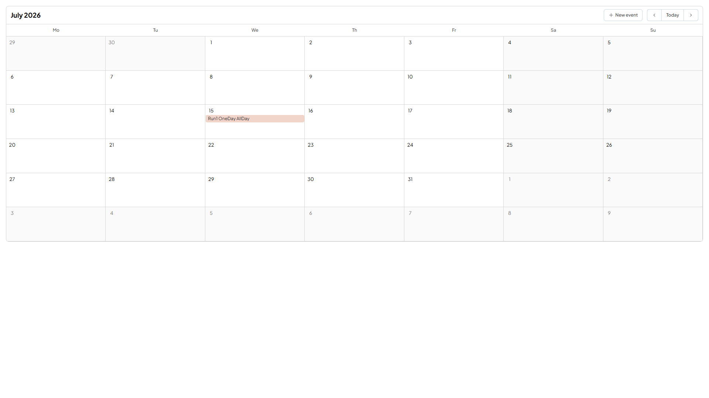
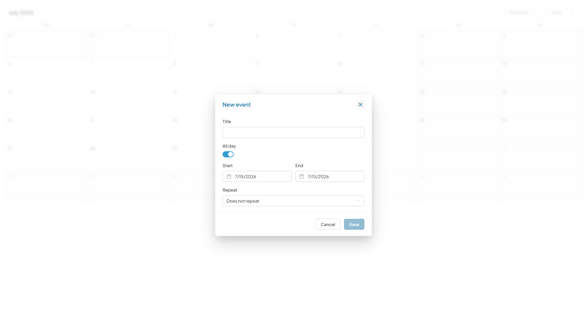
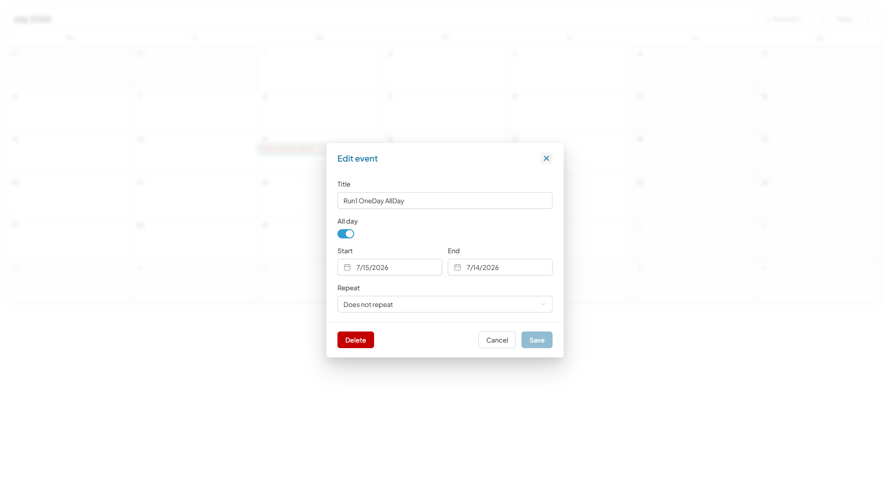
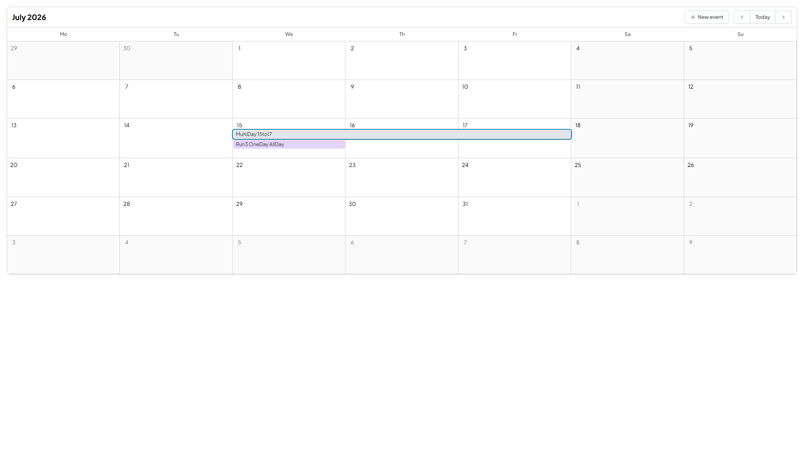

Creating an all-day event whose End equalled its Start saved without complaint, then rendered nowhere and could not be reached by mouse or keyboard — no chip in any day cell, no event button in the accessibility tree, no error, toast or field message. The only visible sign was the empty state disappearing.
Root cause, confirmed in source: all-day spans store an exclusive end — midnight of the day after the last covered day. The editor bound the raw stored end straight to its End field, so “the same day as Start” was a zero-length range that laid out to nothing.
PR #351 took the inclusive-field option: endFieldValue displays the last covered day, setEnd converts back to the exclusive boundary on save, and the all-day exemption left the validity check — so an End before Start is now refused too, a case absent from the original report.
SchedulerEventEditor.vue reverted to tag v2.5.0 against its fix-era test file — 3 failed / 13 passed.
× shows the last day the event covers,
not the exclusive end
→ expected 16 to be 15
× treats End = Start as a one-day event
rather than an empty range
→ expected 2026-07-14T22:00:00.000Z
to deeply equal 2026-07-15T22:00:00.000Z
× refuses an End before Start instead of
saving into the void
→ expected a save emission to be undefined
Same test file on the fixed code — GREEN 3/3. Live STR on the deployed Storybook — 3/3, each from a fresh page load with End re-picked through the datepicker.
✓ shows the last day the event covers ✓ treats End = Start as a one-day event ✓ refuses an End before Start Live: chip renders in the July 15 cell; event button present in the a11y tree and keyboard-reachable. Full framework suite, all three fixes: 414 files / 4112 tests / 0 failures
The fix shipped in a prerelease that is not on npm’s latest dist-tag and carries no GitHub release tag — reading either alone would have reported “not shipped” and manufactured a false BLOCKED. Containment was settled by arithmetic instead.
| Step | Observation |
|---|---|
npm rc dist-tag | 2.6.0-rc.0 → gitHead cb6379d |
| That commit | “release: v2.6.0-rc.0” — the immediate child of #351’s merge |
| Ancestry | fix → rc: ahead_by 1, behind_by 0; main identical to rc |
| Served constant | preview bundle declares version 2.6.0-rc.0 |
Because cb6379d is the release commit sitting directly on top of the fix, any bundle whose version constant reads 2.6.0-rc.0 necessarily contains it.
| # | Check | Result |
|---|---|---|
| 1 | One-day all-day End field shows the last covered day (7/15, not 7/16) | PASS |
| 2–4 | STR ×3 — End = Start saves and a chip renders in the July 15 cell | PASS 3/3 |
| 5 | Event button present in the a11y tree and keyboard-reachable | PASS |
| 6 | Empty state never vanishes without a chip appearing | PASS |
| 7 | End before Start refused — Save disabled (new fix behaviour) | PASS |
| 8 | Timed event’s end passes through unchanged | PASS |
| 9 | Multi-day span still correct; End field = last covered day | PASS |
| 10 | VCST-5678 not regressed — field and announcement agree | PASS |
| 11 | No new console errors | PASS |
| 12 | Story render/runtime error sweep | PASS |
Two checks carry more weight than the STR itself. The edit round-trip re-opened a persisted event and rendered End as 7/15, testing the conversion against stored data rather than a fresh default. The timed-path contrast showed the same stored value rendering 16 with All-day off and 15 with it on — direct evidence that only the all-day branch converts.

7/16 00:00 correctly covers one day. Pre-fix, no chip rendered anywhere.
7/15/2026 — the last day it covers — closing the loose end VCST-5678 left open.

7/17, chip name Jul 15, 2026 – Jul 17, 2026, popover July 15th – July 17th — all three agree, where a VCST-5678 regression would have announced Jul 18.All four are pre-existing and unrelated to this fix, so none is a side effect of it.
00:00), accessible name is 12-hour (12:00 AM) — sighted and screen-reader users get different notations for the same value.Control of type color only supports string, received "boolean" on every load — an argTypes mismatch in the story configuration, not the component.